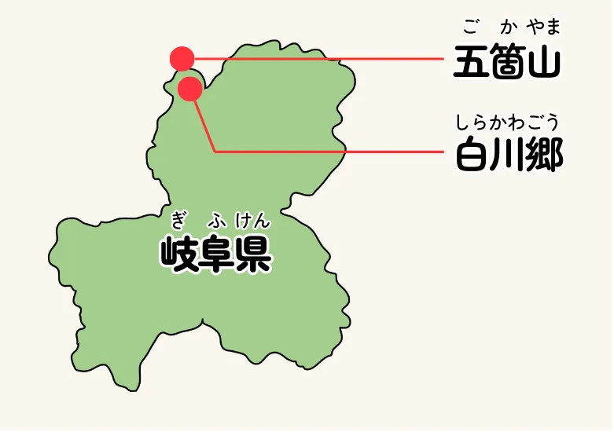
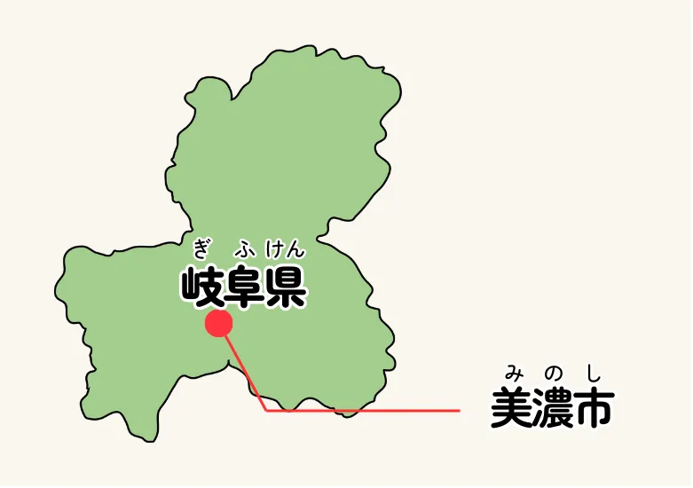

岐阜の名所紹介 不破関


不破関
岐阜県の西側にある関所は不破関というんだぜ。ここは関ヶ原の頃にはもう関所として使われていなかったんだけど、飛鳥時代や奈良時代の頃は鈴鹿関、愛発関と並んで大切な関所だって言われてたんだ。
近江国と美濃国を分けていたこの関所は、岐阜県から東の地域から物や人が京都や畿内に入ったり出ていったりするのを監視していたんだ。
たとえば天智天皇の弟、大海人皇子と、甥っ子の大友皇子が戦った壬申の乱では、大海人皇子がこの不破関をふさいで、大友皇子の仲間たちが自由に通行できないようにすることで、連携を取れなくしたことが勝利の理由の一つだって言われているんだぜ。
岐阜の名所紹介 岐阜城


岐阜城
岐阜市の真ん中にそびえたっているのが、この岐阜城だ！ 金華山と呼ばれる小さい山を覆うように建てられたこの城は元々、稲葉山城と呼ばれていたんだぜ！
鎌倉時代からずっとある岐阜城だけど、やっぱり有名になったのは美濃の蝮、斎藤道三が、油売りの身分から守護を追放して大名に成り上がる国盗りの話からじゃないか？
その後、あの天才軍師竹中半兵衛がわずか16人で乗っ取ったりもして、それで最後は、あの織田信長が手に入れて本拠にしたんだ！
岐阜の名前は「岐山より天下を臨む」という中国の昔話から信長が名付けたんだって。
関ヶ原の直前に信長の孫、秀信が東軍の大軍相手に頑張った、岐阜城の戦いも知られているぞ。

岐阜の名所紹介 白川郷・五箇山

白川郷・五箇山
岐阜県の北西の端っこから、隣り合う富山県の南西部にかけて、世界遺産にもなっている合掌造りの集落があるわ。岐阜県側を白川郷、富山県側を五箇山というの。 特徴的な急角度の屋根は明治時代まで雪の深い地域に、たくさんあったものなんだけど、時が経つにつれて、どんどん無くなっていってしまったわ。白川郷と五箇山に集落が残っているのは、この地域が山に囲まれていて、しかも冬は3mも雪が積もる場所だから他の地域との繋がりがあまり無かったからなんだって。 この屋根の中は屋根裏部屋になっていて、そこでたくさんの蚕を飼っていたそうよ。屋根を交換する時は村の人皆で協力してやっているんだって。そんな白川郷・五箇山の合掌造り集落は今では世界遺産になっているわ！
岐阜の名所紹介 美濃和紙

美濃和紙
実は岐阜県は和紙でとっても有名だったのよ。それも奈良時代から。岐阜県、つまり美濃国で作られた和紙は最上級のものとして扱われていたわ。1300年間もトップクラスの品質を保っているなんて凄くない！？ 今でも機械ではなく手すきで和紙を作っている工場が残っているのだけど、最上級の和紙として認められるためには、いくつかの厳しい条件を満たさないといけないの。
美濃の手すき和紙は今では重要無形文化遺産に登録されているわ。日本人にとって大切な和紙をこれからも守っていきたいものね。
岐阜の名所紹介 神岡鉱山


神岡鉱山
岐阜県の北部にある、ここ神岡鉱山は関ヶ原の戦いよりもずっと前、奈良時代から採掘が続けられていたんだよ。
亜鉛、銀、石灰石とかを採っていて、その規模は東洋一と言われていたんだ。
でも大規模に採掘しながら、採掘した時に出てくるカドミウムのような有害物質を処理してこなかったから、戦国時代の頃にはもう公害に悩まされていたんだ。昭和時代になると神通川の下流の富山県側では、ちょっとしたことで骨が折れてしまうイタイイタイ病が蔓延したんだ。……怖いね。
今はもう採掘はしていないんだけど、残った大きな地下空洞を使って、宇宙からやって来るニュートリノを観測するためのスーパーカミオカンデが建設されているよ。
岐阜の名所紹介
岐阜かかみがはら
航空宇宙博物館


岐阜かかみがはら航空宇宙博物館
各務原には太平洋戦争の前に日本の航空機の試験を進めるために大きな飛行場が作られたんだ。東西に真っ直ぐ伸びる滑走路は今でも自衛隊が使用していて、時折行われる航空パレードは大人気なんだ。
そして、そんな各務原の歴史を伝えるために岐阜かかみがはら航空宇宙博物館があるんだよ。航空も宇宙も扱うのは、宇宙産業が航空産業から発展していったからなんだって。
ここでは、戦中の日本軍では珍しかった液冷エンジンを搭載した戦闘機、飛燕の実物が展示されているよ。飛燕の実物は他では見られない貴重なものなんだ。
そして宇宙コーナーでは、日本の宇宙開発を支えてくれたH-Ⅱロケットをはじめとして、世界でも先進的な宇宙関連技術の数々が紹介されているよ。
岐阜の名所紹介 下呂温泉


下呂温泉
私が紹介するのは、全国的に有名な温泉の下呂温泉よ。下呂温泉は平安時代から続く由緒正しい温泉で、草津温泉や有馬温泉と並んで日本三名泉と呼ばれているわ。
長い歴史を持っているのだけど、温泉地の場所は時代ごとに移り変わっていて、最初は近隣の山の山頂に源泉があったとされるわ。
今と同じ飛騨川の河原に源泉が見つかった後も、洪水で寂れてしまったりしたこともあったそうよ。
今のJR高山本線の開業と共に復活した下呂温泉の特徴は、河原にある噴泉池と呼ばれる無料で入れる足湯よね。昔は全身入れたのだけど、マナーの悪化で足湯の利用だけになってしまったと聞いているわ。
岐阜の名所紹介 長良川


長良川の鵜飼
俺が紹介するのは長良川の鵜飼だ。鵜という鳥を使って川の魚をとる漁は日本全国でおこなわれてきたものだが、岐阜県の長良川で行われるものは特に有名だ。
長良川では、5月11日から10月15日にかけて鵜を使って、鮎をとっている。年に8回、宮内庁管轄の御料場でとった鮎は皇室に献上されている。
鵜飼は夜に篝火を焚いた船で川の上を航行して、灯りに驚いた鮎を鵜がすかさず咥えた時に、あらかじめつけられた首紐をたぐり寄せて船に戻し、喉につっかえた鮎を鵜使いが回収するというやり方が基本だ。岐阜市内には、これを極めた鵜匠が6軒ある。